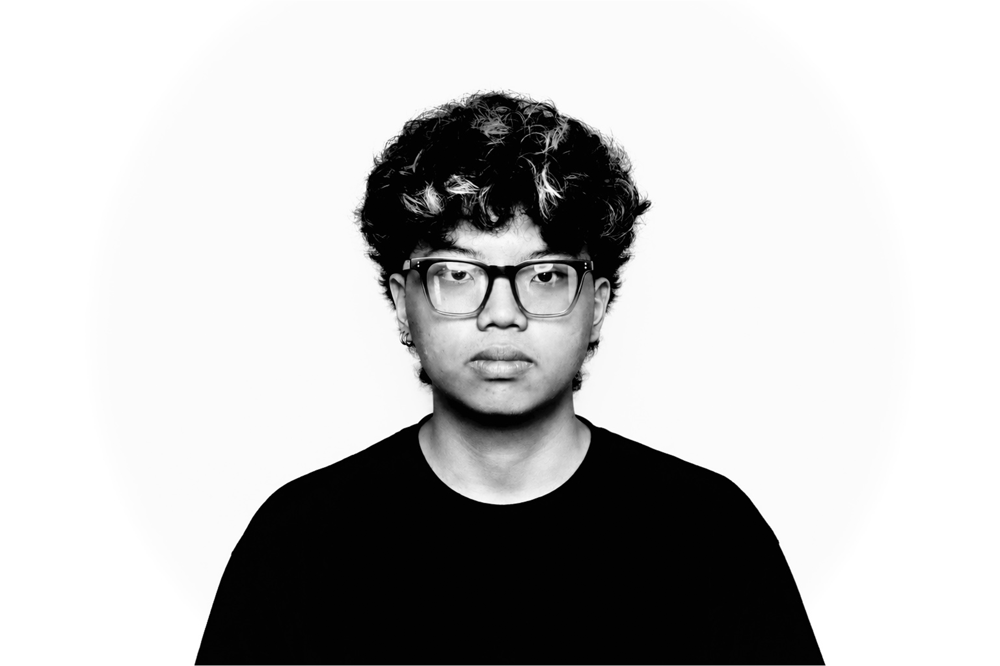
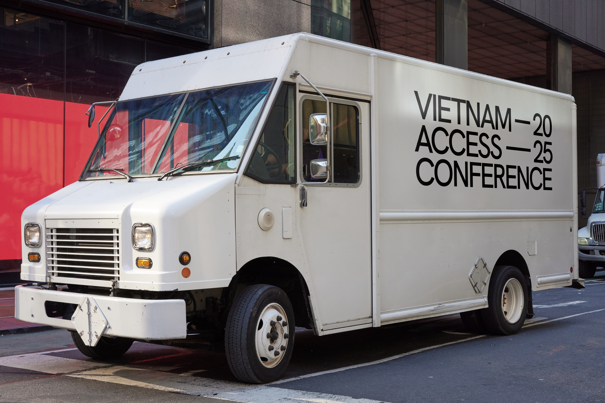
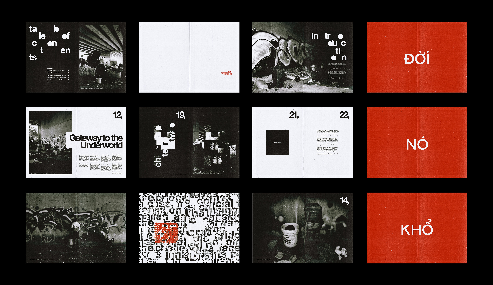
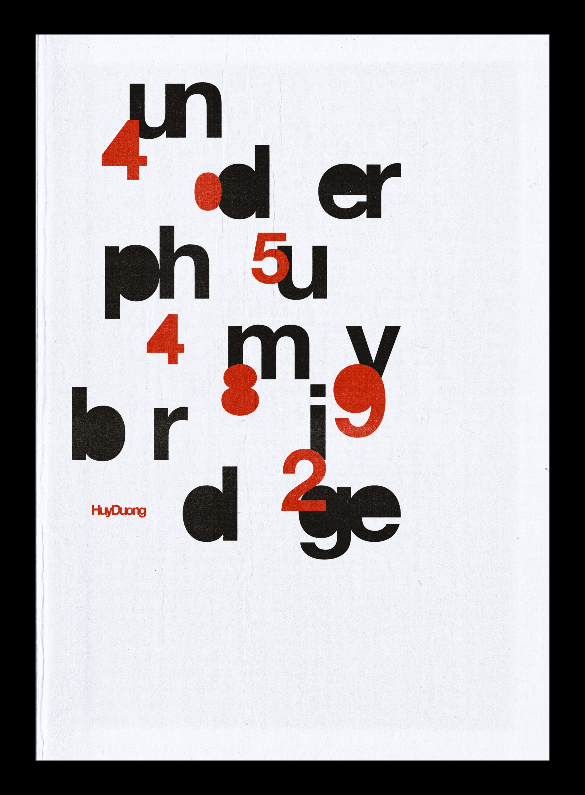

Identity. Editorial. Typography. Digital.
HuyDuong is a multidisciplinary designer based in Ho Chi Minh City, Vietnam, working across the boundaries of each.
Education
RMIT Vietnam University
Bachelor of Design Studies Nov 2023 - Now
Bachelor of Design Studies Nov 2023 - Now
Professional Experiences
RMIT Sustainability Week
Graphic Designer Aug 2025 - Nov 2025
Graphic Designer Aug 2025 - Nov 2025
Flux Collective
Director | Graphic & Motion Designer Mar 2025 - Now
Director | Graphic & Motion Designer Mar 2025 - Now
Dragon Capital | Project Pitching
Brand Identity Designer May 2025
Brand Identity Designer May 2025
RMIT Flag Football Club
Design Leader Nov 2024 - Sep 2026
Design Leader Nov 2024 - Sep 2026
Skills
Software
InDesign, Illustrator, Photoshop, After Effects, TouchDesigner, Resolume Arena, Blender
Creative Skillsets
Editorial & Print Production, Branding & Identity, Motion & Interactive Graphics, UX Design
Showcase
Ta nhớ gì về: Mùa hè bất tận
Publication
Impact Showcase 2024 | RMIT Vietnam
Publication
Coffee Table Book 2024 | RMIT Vietnam
Publication
Bangkok Design Week 2026
Projection Mapping
IMMERSIO 2026
Projection Mapping
RMIT LIGHT NIGHT 2025 | RMIT Vietnam
VJ, Projection Mapping
Beyond2D 2024 | RMIT Vietnam
Best Motion Graphics & 3D Posters
Awards
VJ:MAZED 2025
Champion VJ Contest
Champion VJ Contest
The Best Brand Awards 2025
Asia Oceania Silver Identity Category
Asia Oceania Silver Identity Category
TERANG 2026
Top 4 & Best Audio Design Projection Mapping
Top 4 & Best Audio Design Projection Mapping




Dấu Ấn / Imprint
Vietnam Access Conference
RMIT Sustainability Week 2025
Under Phu My Bridge
Dấu Ấn / Imprint

Xóm Nước Đen

No Reset
RMIT Sustainability Week 2025

Vietnam Access Conference

Under Phu My Bridge
Thượng Nguồn (Upstream)
Sớm Mai
Mắc Kẹt ở Market